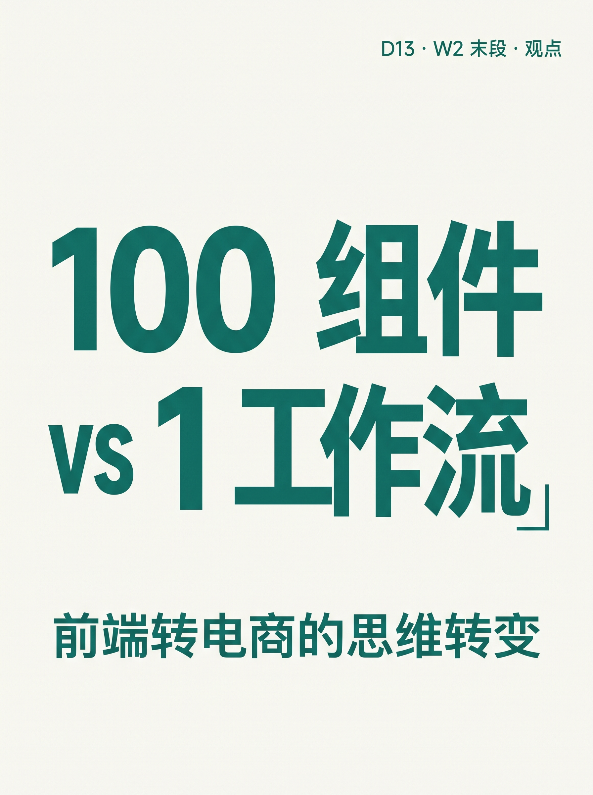
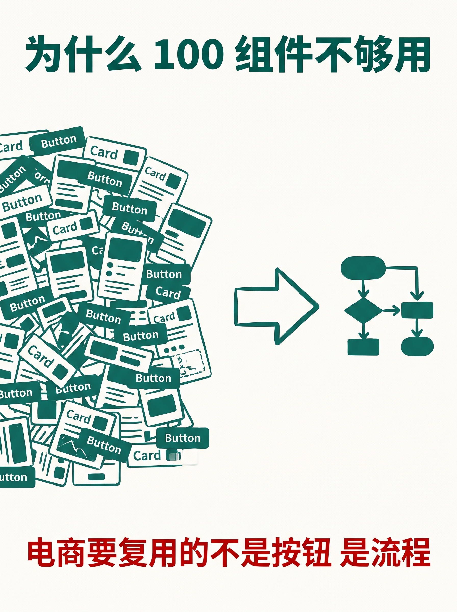
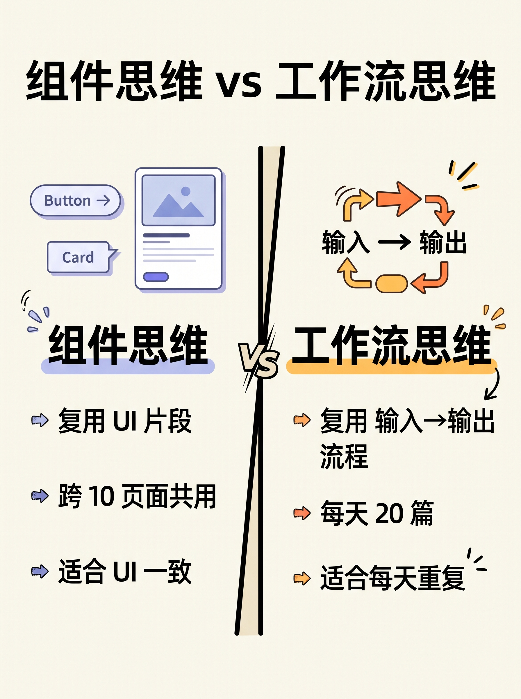
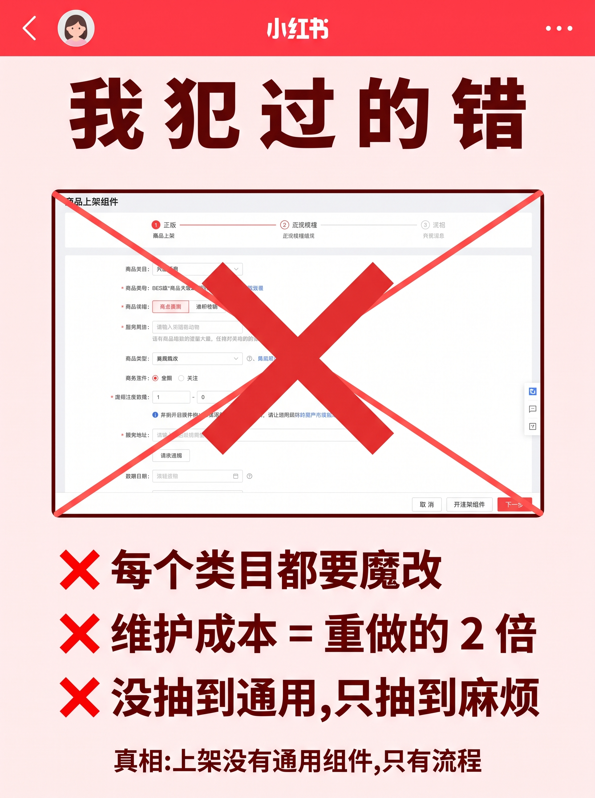
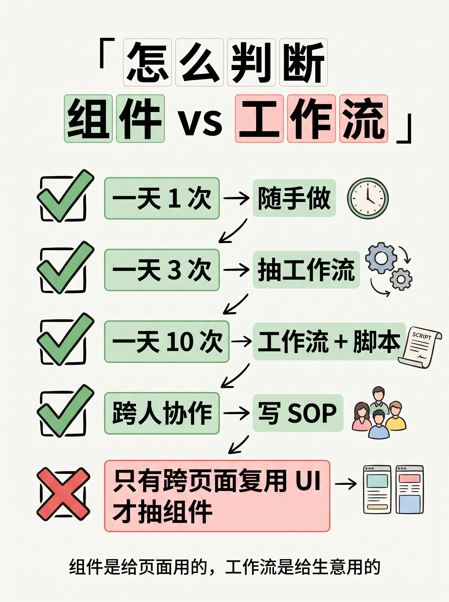
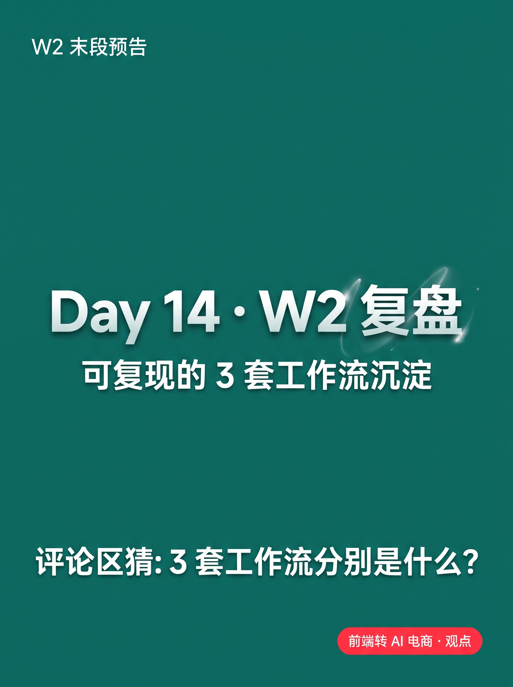

使用说明:所有内容已按发布标准预排好,发布前请用最下方 3 个复制按钮。
6 张图按顺序上传,标题"100 组件 vs 1 工作流 · 思维转变"(XHS 上限 20 字 ✓)。






100 组件 vs 1 工作流 · 思维转变
做了 5 年 React 组件,转电商后最大的思维转变: 写 100 个组件,不如写 1 个工作流。 ───── 为什么 100 个组件不够用 ───── 做前端时,我以为"复用"是 UI 层面的事。 Button、Card、Modal — 抽出来跨页面共用。 但电商里要复用的不是按钮,是流程。 选品 → 上架 → 文案 → 客服 → 复盘 5 件事每天重做,你抽不出"按钮组件"复用它们。 你只能抽出 1 个"工作流"复用它们。 ───── 组件思维 vs 工作流思维 ───── 组件思维:复用 UI 片段 · 抽 Button → 跨 10 个页面共用 · 抽 Card → 跨 3 个业务共用 · 适合:UI 一致、交互一致 工作流思维:复用「输入 → 输出」流程 · 文案流程 → 每天 20 篇 · 客服流程 → 自动 + 人工复核 · 数据流程 → 5 分钟出日报 · 适合:每天重复、业务线性 电商 = 每天重复 + 业务线性 = 必须用工作流思维。 只抽组件,你会卡在"按钮好看,但每天还是重做"。 ───── 我犯过的错 ───── 第 1 个月我想做"商品上架组件"。 抽 SKU、价格、库存、详情页 — 写成 1 个大表单。 结果:每个类目都要魔改,维护成本 = 重做的 2 倍。 真相是:上架没有"通用组件",只有"流程": 选品 → 整理 → 填表 → 配图 → 提交 → 复盘 6 步。 把 6 步串成 1 条工作流 = 真的省时间。 商品图命名也是同理: 不是写个工具 UI,而是 1 小时定 4 段命名规则 + 4 行 Python 脚本 = 30 分钟变 5 分钟。 没有 UI,没有组件,只有 1 条命令。 这就是 1 个工作流干掉 100 个按钮的意义。 ───── 怎么判断该写「组件」还是「工作流」 ───── ✅ 一天做 1 次 → 随手做,不抽 ✅ 一天做 3 次 → 抽工作流 ✅ 一天做 10 次 → 工作流 + 自动脚本 ✅ 跨人协作 → 必须写 SOP ❌ 只有跨页面复用 UI → 才抽组件 一句话: 组件是给"页面"用的, 工作流是给"生意"用的。 电商老板不缺组件,缺的是每条业务线都跑通的工作流。 ───── Day 14 预告 ───── W2 第 7 天 · W2 复盘:可复现的 3 套工作流沉淀 评论区猜:3 套工作流分别是什么? 👇 关注我,看 30 天跑完我会得出什么结论 🌱
#前端转AI电商
#组件思维
#工作流
#工程化思维
#程序员转电商
♡ 收藏
💬 评论
↗ 分享
📋 一键复制
📊 D13 数据复盘
核心论点: 100 组件 vs 1 工作流 —— 组件是给页面用的,工作流是给生意用的(电商老板不缺组件,缺每条业务线都跑通的工作流)
对比维度: 组件思维(UI 复用 / 跨页面) vs 工作流思维(流程复用 / 每天重复 + 业务线性)
真实踩坑: 第 1 个月做"商品上架组件" = 每个类目都要魔改,维护成本 = 重做的 2 倍(诚实记录,不藏拙)
决策清单: 一天 1 次 / 3 次 / 10 次 / 跨人协作 → 决策"抽不抽、抽组件还是抽工作流"
承接 W2: D5 流程化 + D6 告别重做 + D9 工作流 + D11/D12 数据/工具流 → D13 立"W2 末段收官观点"
🚀 发布前 15 分钟 SOP
- 打开小红书 App → 创建笔记
- 选 6 张图(封面 1 + 内页 5),按顺序排好
- 选 3:4 竖图
- 标题:100 组件 vs 1 工作流 · 思维转变
- 正文:点"复制正文"按钮粘贴
- 加 5 个标签
- 选发布时间:周六 20:00-21:00(W2 末段观点 + 周末情绪共鸣)
- 发布
📈 发布后 24 小时 SOP
| 时间 | 动作 | 目标 |
|---|---|---|
| 10 分钟 | 自己评论扣 1("你做电商,先抽组件还是抽工作流?"+ 二选一) | 激活引导型评论区 |
| 30 分钟 | 每条评论都认真回复(尤其选"抽组件"的追问 1-2 句) | 评论区密度提升推荐 |
| 2 小时 | 截图保存首日数据 | W2 末段收官素材 |
| 6 小时 | 看一次数据(曝光/收藏/评论/二选一分布) | 判断是否二次推 |
| 24 小时 | 统计评论观点倾向,准备 D14 "3 套工作流" 复盘稿 | W2 收官节奏 |
🎯 Day 13 数据目标
| 指标 | 目标 | 备注 |
|---|---|---|
| 曝光 | ≥ 1500 | W2 末段叠加 + 观点类周末高曝光 |
| 收藏率 | ≥ 7% | 决策表 + 真实踩坑案例天然高收藏 |
| 评论 | ≥ 100 | 二选一钩子易参与 + 周末情绪共鸣 |
| 涨粉 | ≥ 150 | 观点类 W2 末段冲一波,沉淀人设粉 |
💡 关键设计点
1. 标题 = 数字反差 + 思维关键词
- "100 组件 vs 1 工作流" = 数字反差(让人一眼想点进来看"为什么 100 个不如 1 个")
- "思维转变" = 立人设关键词(承接 D5/D6/D9 的工程师视角)
- 字数 15 字,XHS 上限 20 ✓
2. 正文 = 4 段式 + 二选一钩子
- 为什么 100 个组件不够用(电商 = 流程复用 ≠ UI 复用)
- 组件思维 vs 工作流思维(左右对比,杀手锏图 03)
- 我犯过的错(真实踩坑案例,反向佐证)
- 怎么判断(决策清单:1/3/10 次 + 跨人协作)
3. 图文对应
- 图 01 = 封面(墨绿底 + 大字"100 组件 vs 1 工作流" + 副标"前端转电商的思维转变" + 顶部"D13 · W2 末段 · 观点")
- 图 02 = 为什么 100 组件不够用(组件堆 vs 流程图,视觉反差)
- 图 03 = 组件 vs 工作流(左组件思维 / 右工作流思维,4-4 对比表)
- 图 04 = 我犯过的错(浅红警示底 + 大表单打叉 + 3 行红字 "维护成本 = 重做的 2 倍")
- 图 05 = 怎么判断(决策清单,4 行绿勾 + 1 行红叉)
- 图 06 = Day14 预告(墨绿底大字"Day 14 · W2 复盘"+ 副标"可复现的 3 套工作流沉淀")
4. 承接 W2 收官
- D5 把凭感觉变可重复 → D6 告别重做 → D9 30 分钟变 5 分钟 → D11/D12 工具流程 → D13 立"W2 末段观点"
- 钩子升级:D11 "你接过哪个 API"(身份)/ D12 "你常用哪个 API + 跑什么任务"(场景+工具)/ D13 "先抽组件还是抽工作流"(观点投票,立场型)
- D14 预告"W2 复盘 · 3 套工作流"直接承接 D13 的工作流观点,把评论区投票沉淀成 D14 复盘素材
⚠️ 注意事项
- "组件"不等于"代码组件" —— 这里指泛指 UI 抽取的复用单元(Button / Card / 模板 / 配置项),不只是 React 组件
- "工作流"指业务流 —— 不是 BPMN 流程图那种重文档,是"输入→流程→输出"的可重复序列
- 诚实记录 —— 第 1 个月做"商品上架组件"失败要诚实写,不藏拙,真实感比"完美方案"更容易涨粉
- 决策清单不要复杂 —— 4 行勾 + 1 行叉就够,不要列 10 条决策树(用户读不完)
- "组件是给页面用的,工作流是给生意用的" —— 这句是 D13 的核心句,要出现在结尾加强记忆点
- 不要写 BPMN 流程图 —— 电商老板用不到那种重文档,讲"4 行 Python"比"流程图引擎"更落地
- 6 张图按顺序 —— 封面(钩子) → 为什么不够用(铺垫) → 组件 vs 工作流(对比) → 我犯的错(反证) → 怎么判断(收官) → Day14 预告(W2 收官节奏)
- tags 5 个版本 —— #前端转AI电商 #组件思维 #工作流 #工程化思维 #程序员转电商